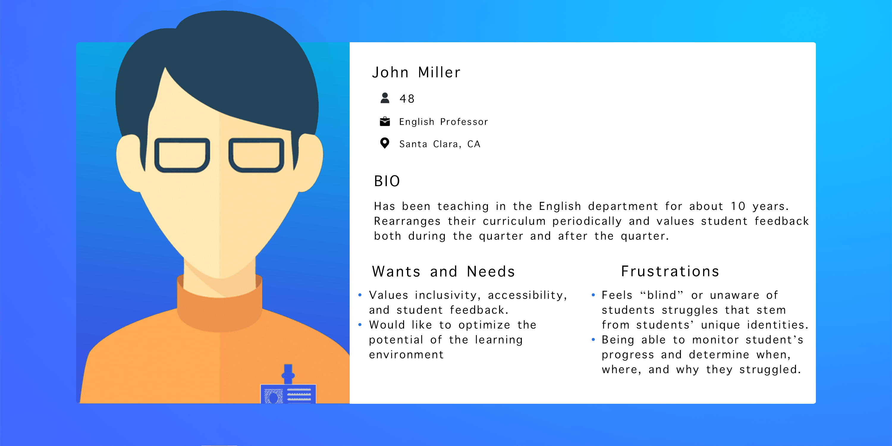
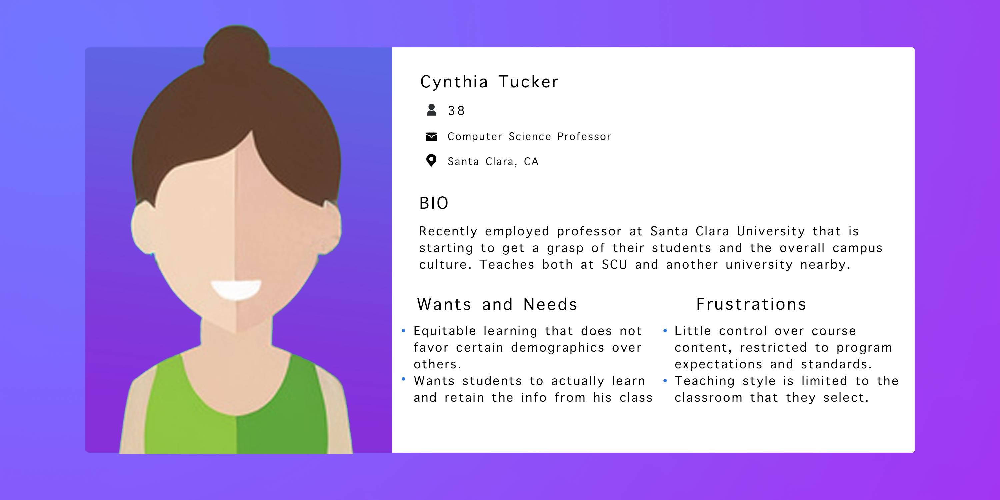
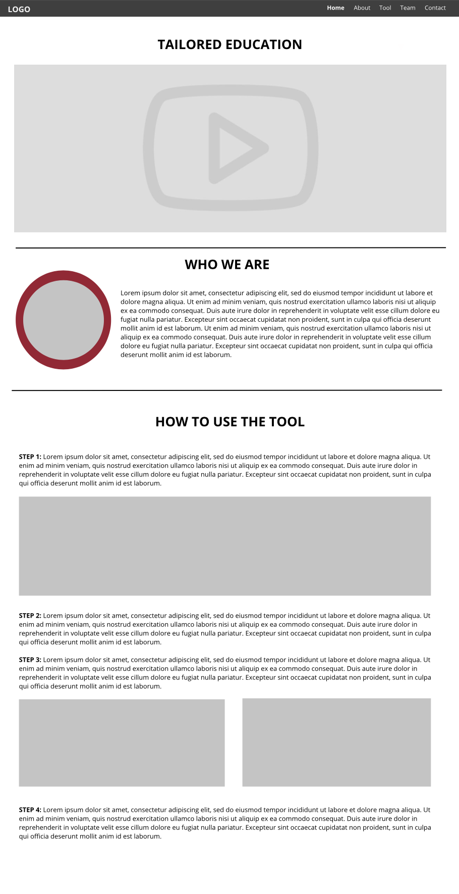
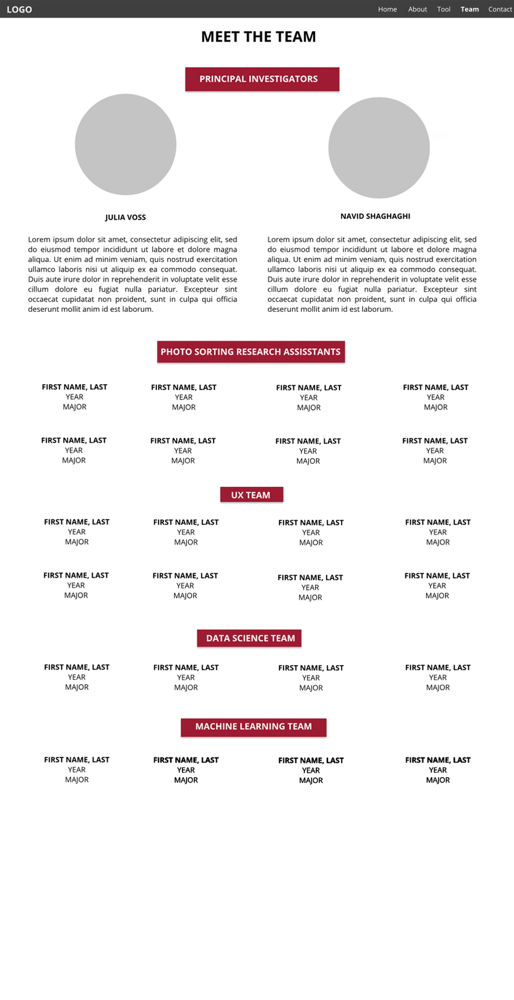
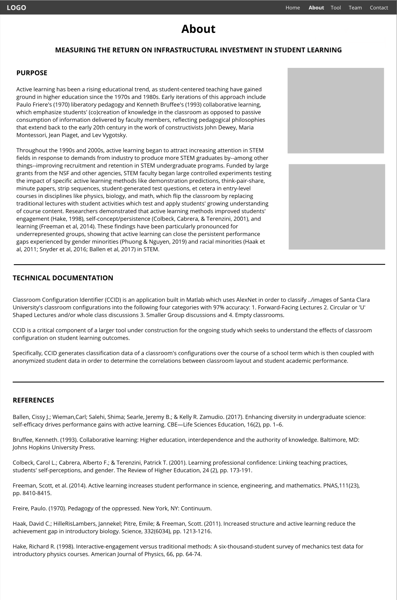
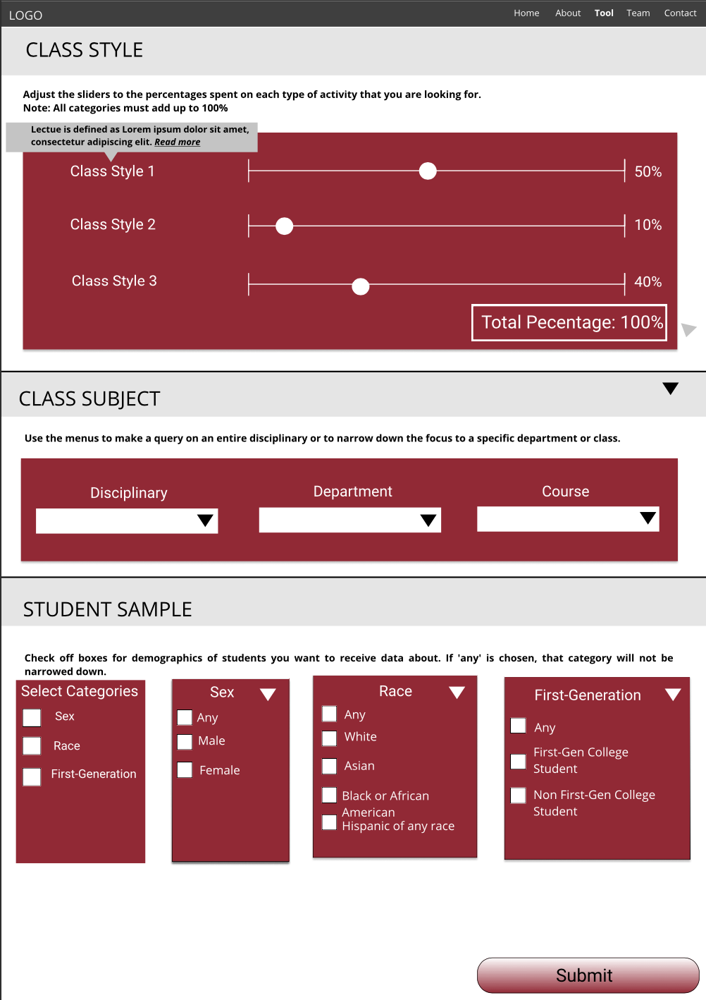
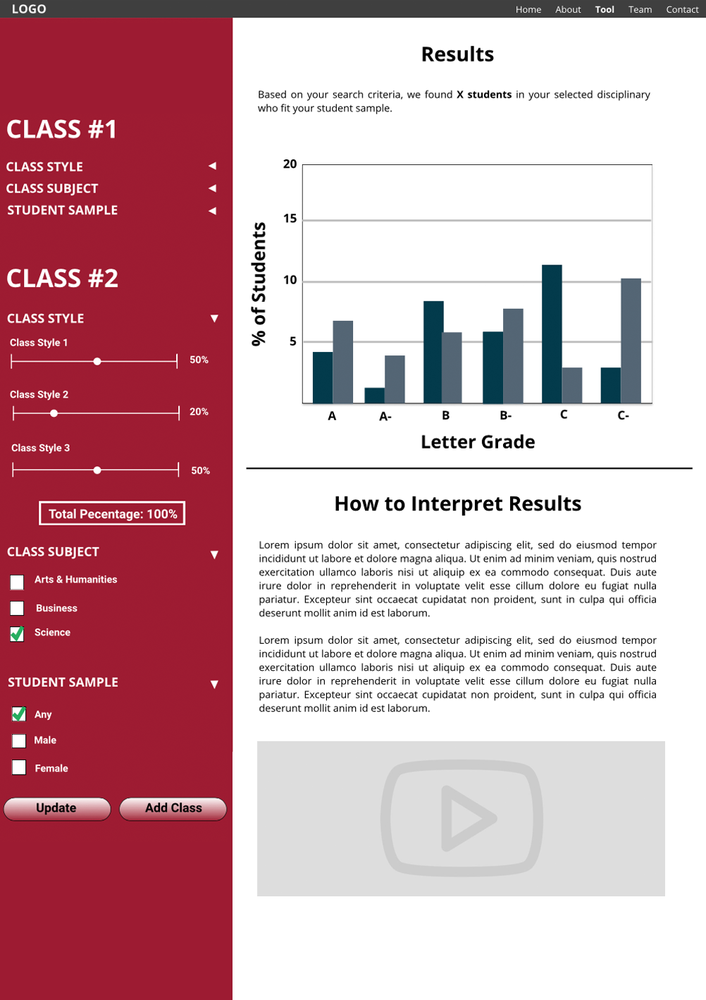

Tailored Education
https://tailored.education
Measuring the Return on Infrastructural Investment in Student Learning
Throughout the 1990s and 2000s, active learning began to attract increasing attention in STEM fields in response to demands from industry to produce more STEM graduates by - among other things - improving recruitment and retention in STEM undergraduate programs. Funded by large grants from the NSF and other agencies, STEM faculty began large controlled experiments testing the impact of specific active learning methods like demonstration predictions, think-pair-share, minute papers, strip sequences, student-generated test questions, et cetera in entry-level courses in disciplines like physics, biology, and math, which flip the classroom by replacing traditional lectures with student activities which test and apply students' growing understanding of course content.
This study used automated aerial photography to document the instructional formats used in 74 courses taught in humanities, social sciences, engineering, and business disciplines in 12 active learning and 2 traditional (control) classrooms. We used the machine learning tools available in Matlab to analyze the photos to identify instances of lecture format, large group discussion, small group discussion, approximating different active learning formats.
While this project was collecting data to feed into the machine learning image recognition algorithm, an online tool was needed so that professors could access this data.
For this project, I took on the role of UX Researcher and UX Designer. I conducted user research using the professors at our school while looking at other similar projects that were available at other colleges and universities. I also defined the product with deliverables such as a user personas, while ideating designs, conducting usability tests, and applying revisions.
As part of the competitor or landscape analysis, we researched similar projects and sites to understand where TailorEd stands in the market and to see the strengths and weaknesses of our competitors. We looked at a variety of factors including the purpose of the tool, cost to use, target audience and more.
| UBC Grades | Atlas | Berkeleytime | |
|---|---|---|---|
| Cost | Free | Free for Students, Staff & Faculty | Free |
| Target Audience | Professors | Professors & Students | Students |
| Purpose of Tool | To view and visualize historic grade distribution of courses at the University of British Columbia Vancouver and Okanagan, dsplaying grade reports in a more useable manner than what is officially provided by UBC and reporting older grade data that has been removed from public access | To display historic data about curriculum to guide University of Michigan students, instructors, and staff in decision making | To help students view and compare grade distributions for each course and semester and to track accurate, real-time course enrollment trends and history |
We interviewed a total of ten professors at SCU to better understand how they design their course curriculum and how useful they would find a tool like ours.
With these objectives in mind, we aimed to answer the aimed to discover how professors would answer the following questions:
Below are a few highlight quotes from the interviews that we conducted.
"I'm interested in understanding student socioeconomic backgrounds and how this affects student learning (how they learn and whether they choose to learn)."
"I prefer to make minor changes every quarter rather than a massive reconstruction of my course."
"Professors ideally try to mix [classroom] activities, it could be hard to implement because some classes have fixed seating arrangements."
Using the information from both the competitive landscape analysis and the user interviews, I needed to build a few user personas to get a better grasp of the type of user that we are designing for and their needs and frustrations.
Based on the research findings, I created John Miller and Cynthia Tucker - with goals and characteristics that represent the needs of the larger group. With their goals, needs, frustrations, and fears in mind, I have a better understanding of who we will be designing for.
 With the research that we had conducted in mind, we wanted to make sure that we covered the following questions:
Using those guiding questions, we began to build our initial low-fidelity prototypes of the tool using Figma:
    Click the website to check for updates on the project.
https://tailored.education
Watch our presentation at the Course Hero Education Summit which our team presented virtually in September 2020.